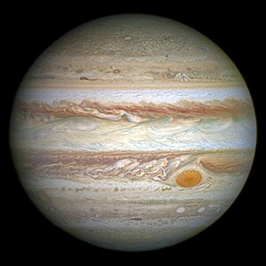
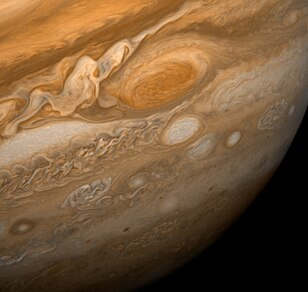
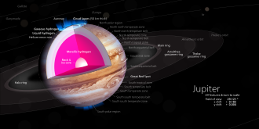

Júpiter é o maior planeta do Sistema Solar, tanto em diâmetro quanto em massa, e é o quinto mais próximo do Sol. Possui menos de um milésimo da massa solar, contudo tem 2,5 vezes a massa de todos os outros planetas em conjunto. É um planeta gasoso, junto com Saturno, Urano e Netuno. Júpiter é composto principalmente de hidrogênio, sendo um quarto de sua massa composta de hélio, embora o hélio corresponda a apenas um décimo do número total de moléculas. O planeta também pode possuir um núcleo rochoso composto por elementos mais pesados, embora, como os outros planetas gigantes, não possua uma superfície sólida bem definida.
A atmosfera de Júpiter é composta de 88 a 92% de hidrogênio e 8 a 12% de hélio, considerando a percentagem em volume de moléculas. Esta composição muda quando descrita em termos de massa, uma vez que uma molécula de hélio é cerca de quatro vezes mais massiva que uma de hidrogênio; com isso, a atmosfera de Júpiter é composta por aproximadamente 75% de hidrogênio e 24% de hélio em massa, sendo o 1% remanescente composto por outros elementos.
Acredita-se que Júpiter seja composto de um núcleo denso com uma mistura de elementos, circundado por hidrogênio metálico líquido com algum hélio e uma camada exterior, composta principalmente de hidrogênio molecular, mas para além deste esboço básico ainda existem dúvidas consideráveis sobre a estrutura interna do planeta. O núcleo é muitas vezes descrito como rochoso, mas sua composição em detalhes é desconhecida, bem como as propriedades destes materiais na temperatura e pressão a estas profundidades. Em 1997, a existência de um núcleo sólido foi sugerida por medições gravitacionais indicando uma massa de 12 a 45 vezes a da Terra, ou 4% a 14% da massa jupiteriana.
